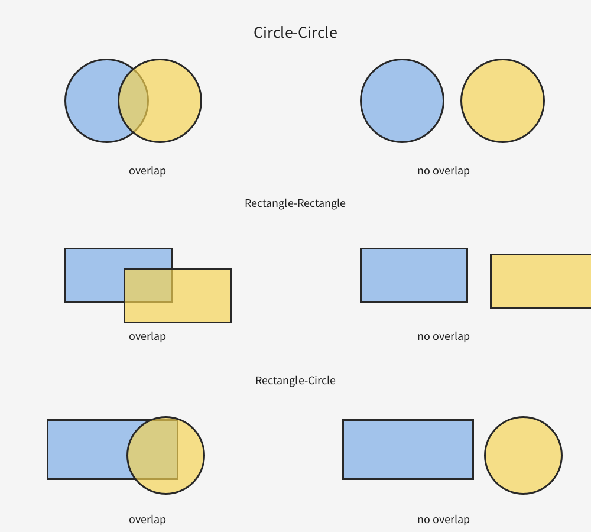

Collision Detection
In games and interactive sketches, we often need to know whether two objects are touching, overlapping, or hitting each other. For example:
- Did the player click on a button?
- Did a bullet hit an enemy?
- Did the ball touch the wall?
- Did two game objects overlap?
Different shapes need different collision tests. In this page, we will study several common cases.
Big Idea
Most collision tests come from one of these two ideas:
- Distance test: how far apart are two points or centers?
- Range overlap test: do horizontal and vertical spans overlap?
Once you understand these two patterns, many collision problems become much easier.
1. Point vs Point
Two points collide only if they have exactly the same coordinates.
boolean pointPoint(float x1, float y1, float x2, float y2){
return x1 == x2 && y1 == y2;
}Be careful: exact equality works best for integer coordinates.
2. Point vs Circle
A point is inside a circle if the distance from the point to the center of the circle is less than or equal to the radius.
boolean pointCircle(float px, float py, float cx, float cy, float r){
return dist(px, py, cx, cy) <= r;
}Example: Suppose the circle has center (100, 100) and radius 20.
If the point is (110, 110), then the distance to the center is about
14.1, so the point is inside the circle.
3. Circle vs Circle
Two circles collide if the distance between their centers is less than or equal to the sum of their radii.
boolean circleCircle(float x1, float y1, float r1,
float x2, float y2, float r2){
return dist(x1, y1, x2, y2) <= r1 + r2;
}This is really the same idea as point-vs-circle, except now both objects have size.
4. Point vs Rectangle
A point is inside a rectangle if:
- its x-coordinate is between the left and right edges, and
- its y-coordinate is between the top and bottom edges.
Assume: rectMode(CORNER)
boolean pointRect(float px, float py,
float rx, float ry, float rw, float rh){
return px >= rx && px <= rx + rw &&
py >= ry && py <= ry + rh;
}Reminder: in Processing, larger y-values are lower on the screen.
5. Rectangle vs Rectangle
Two rectangles do not collide if one is completely to the left, right, above, or below the other.
So instead of asking “Are they overlapping?”, it is often easier to ask: “Are they separated?”
boolean rectRect(float x1, float y1, float w1, float h1,
float x2, float y2, float w2, float h2){
if(x1 + w1 < x2) return false; // first is left of second
if(x2 + w2 < x1) return false; // second is left of first
if(y1 + h1 < y2) return false; // first is above second
if(y2 + h2 < y1) return false; // second is above first
return true;
}Important pattern: if the shapes are not separated, then they are colliding.
6. Circle vs Rectangle
This one is trickier. We find the closest point on the rectangle to the circle’s center, then measure the distance from that point to the center.
If that distance is less than or equal to the radius, the shapes collide.
boolean circleRect(float cx, float cy, float r,
float rx, float ry, float rw, float rh){
float closestX = constrain(cx, rx, rx + rw);
float closestY = constrain(cy, ry, ry + rh);
return dist(cx, cy, closestX, closestY) <= r;
}The closest point might lie:
- on an edge,
- at a corner, or
- inside the rectangle.

Which Test Should I Use?
| Shape A | Shape B | Main idea |
|---|---|---|
| Point | Point | Exact coordinate match |
| Point | Circle | Distance to center |
| Circle | Circle | Distance between centers |
| Point | Rectangle | Inside horizontal and vertical ranges |
| Rectangle | Rectangle | Check whether ranges overlap |
| Circle | Rectangle | Closest point + distance |
Common Mistakes
- Using
rectMode(CENTER)with formulas that assumerectMode(CORNER) - Confusing width/height with right/bottom edge positions
- Forgetting that larger
ymeans lower on the screen - Using exact equality with floating-point values
- Trying to memorize formulas instead of understanding the geometry
Mini Practice
- Will a point at
(50, 70)collide with a circle centered at(60, 70)of radius15? - Will a point at
(120, 40)be inside a rectangle at(100, 20)with width50and height30? - Do these rectangles collide?
- Rectangle A:
(20, 20, 40, 60) - Rectangle B:
(50, 40, 30, 20)
- Rectangle A:
- Change one value in the examples above so that the answer becomes “no collision.”
Summary
Collision detection is geometry in action. Most of the time, you are either:
- checking a distance, or
- checking whether x- and y-ranges overlap.
Once those two ideas are clear, many collision problems become much easier to understand.